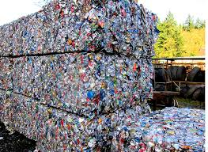
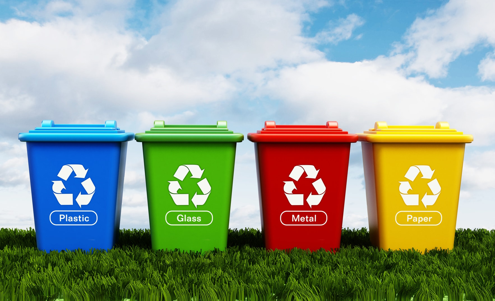
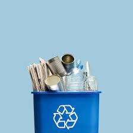
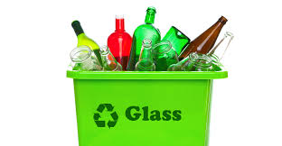
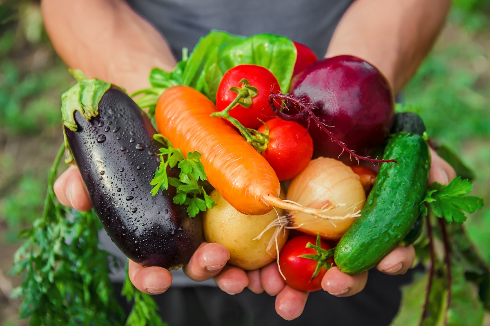

Our Mission, Purpose & Vision
Our world is filling with polution and trash. This will continue unless we do something else with this material: recycling and reusing are the answer. But for anything to be common, it must be easy and widely coordinated. We recognize the need for worldwide recycling, a global effort to take better care of our planet. The practice is still largely messy, confused and inconvenient. There was no one-stop unifying force to make it simple. We are here to coordinate recycling and reusing on a global scale. It's past time to unify these efforts. Cheers, to our beautiful planet.
Recycling Facts from 2022
Top Recycling Statistics of 2022
Considering the EPA hasn’t released an updated report on the state of recycling and
waste since 2018, it can be difficult to get an idea of how the recycling industry has
changed in the past few years. Luckily, we have compiled the most recent statistics
on plastic, paper, aluminum, glass, electronic and food recycling for 2022.
1. Of the 40 million tons of plastic waste generated in the U.S. in 2021, only 5% to 6% —
or about two million tons —was recycled.
2. Between 2019 and 2020, there was a 5.7% overall decrease in plastics recovered
for recycling in the U.S. That is the equivalent of 290 million pounds.
3. Approximately 36% of all plastic produced is used to create packaging, 85% of
which ends up in landfills.
4. About 98% of single-use plastic products are made from fossil fuels.
5. Globally, we produce about 400 million tons of plastic waste yearly.
Plastic recycling has long posed challenges. Unlike glass and metal, plastic cannot
be repeatedly recycled without quickly degrading in quality.
7. The total bottle recycling rate for 2020 was 27.2%, down from 28.7% in 2019.
8. Every hour, 2.5 million plastic bottles are thrown away in the U.S.
9. Between 75 and 199 million tons of plastic are currently in our oceans.
10. Plastic bottles take upwards of 450 years to degrade.
Plastic Recycling Facts & Statistics

Paper Recycling Facts & Statistics

Paper is one of the most-often recycled materials, accounting for half of the
materials collected for recycling by weight.
11. More than 50 million tons of paper were recovered for recycling in 2021, achieving
a 68% recycling rate.
12. In 2021, 91.4% of corrugated cardboard was recycled.
13. Almost half of the paper recycled in 2021 was used to make cardboard boxes.
Due to high recycling rates, aluminum only accounts for 1% of the waste stream in the
U.S. Aluminum, like glass, can be endlessly recycled with far less energy needed
versus creating a product out of raw materials.
14. Consumption of aluminum in the U.S. was 4.3 million metric tons in 2021, up from
3.98 million metric tons in 2020.
15. Global demand for aluminum is expected to grow by more than 80% by 2050.
16. Although aluminum can be infinitely recycled, 7 million tons of aluminum are still
not recycled each year.
Aluminum Recycling Facts & Statistics

Glass Recycling Facts & Statistics

Glass is made of common materials like sand and limestone, and it is one of the
cheapest and most efficient materials to recycle.
17. About 110 million glass bottles are thrown away every day in the U.S., of which only
one-third get recycled.
18. It is cheaper to make glass products out of recycled materials than virgin raw
materials.
19. Unlike plastic, glass bottles and jars are fully recyclable and can be recycled
endlessly without degradation of quality or purity.
Chronic food misallocation and inefficiency have caused food waste to be the largest
category of waste.
23. Globally, 40% of the food produced is wasted. The food lost on farms alone could
feed every undernourished person in the world four times over.
24. Food waste generates around 10% of global greenhouse gas emissions.
25. Each year, home composting could divert 330 pounds of food waste per
household from landfills
Food Waste Recycling Facts & Statistics
